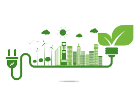

Sustentabilidade
Tecnologia sustentável é agregar todo o conhecimento e aplicar priorizando a sustentabilidade. É ter responsabilidade com as questões ecológicas no meio em que vivemos e promover discussões globais sobre as consequências do que vem ocorrendo no mundo.
Inovação Tecnológica
Podemos entendê-las como inovações que priorizam o equilíbrio entre o desenvolvimento tecnológico e as preocupações com o meio ambiente. Além disso, também envolvem discussões globais sobre os avanços nos processos de produção e as consequências para o ecossistema.
Luta pela Causa
Qual a importância da inovação para a sustentabilidade? A inovação é fundamental para a sustentabilidade de qualquer organização. Aquelas que não se renovam tendem a perder sua relevância, podendo até tornarem-se obsoletas. Porém, por ser um termo muito usado, há certa confusão sobre o que é, de fato, inovação.
Tecnologia e o meio ambiente
Ao longo dos anos, surgiram diversos projetos que buscam melhorar a conservação do meio ambiente, mas na prática isso não acaba acontecendo da forma que deveria e o planeta sofre o impacto do descaso dos governos com a sua preservação.Quando uma empresa está preocupada somente com o seu lucro, o meio ambiente sofre as consequências e acaba se degradando. Felizmente, existem leis que impedem a tecnologia de servir somente ao bem estar humano e se esquecer do meio ambiente.
Solução para o problema
Quando uma empresa está preocupada somente com o seu lucro, o meio ambiente sofre as consequências e acaba se degradando. Felizmente, existem leis que impedem a tecnologia de servir somente ao bem estar humano e se esquecer do meio ambiente. Por outro lado, quando a empresa entende que a responsabilidade ambiental deve ser parte importante do seu objetivo, ela acaba tendo grandes retornos financeiros, praticando a sustentabilidade e melhorando os aspectos ambientais.
Tudo isso prova que a tecnologia pode ser uma grande aliada na preservação e reconstrução do meio ambiente. É preciso, no entanto, que mais empresas e países estejam dispostos a fazer investimentos para a criação de novas soluções.